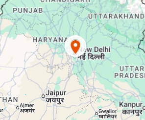
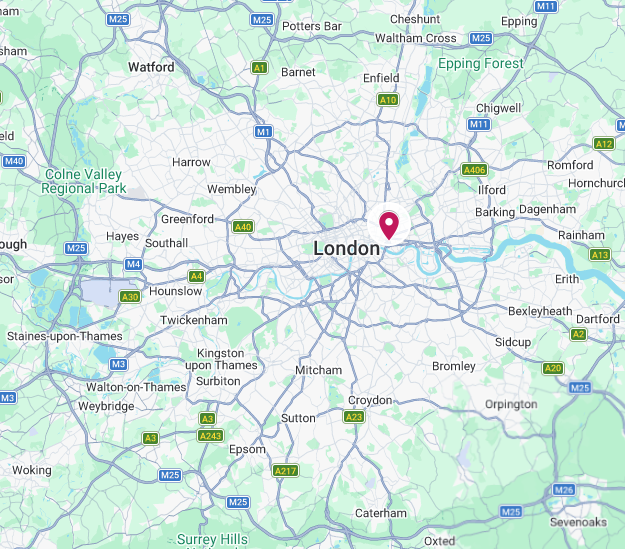
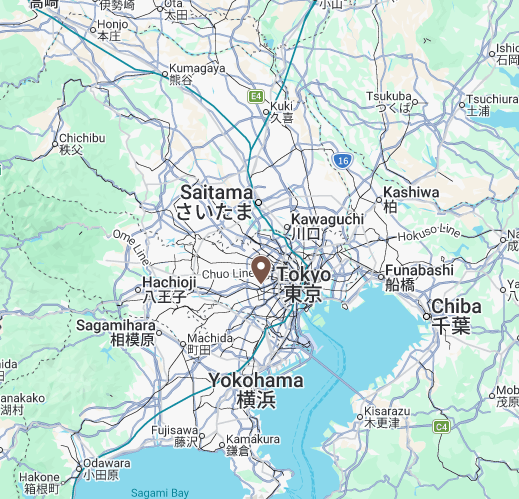
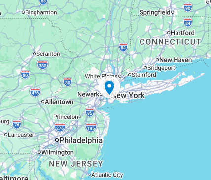
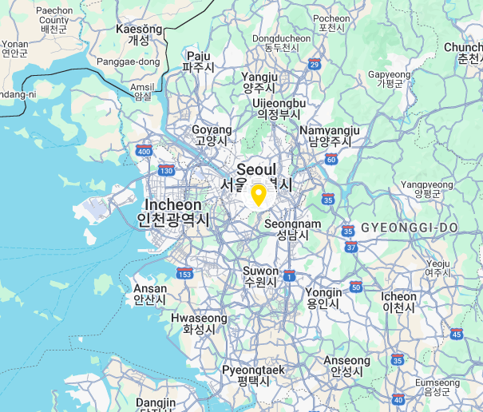
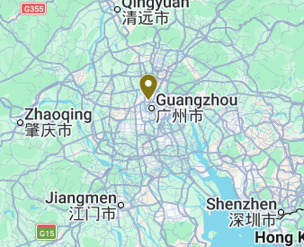
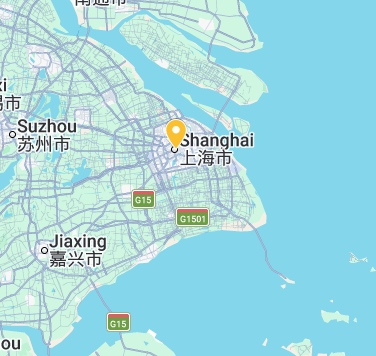

| Core Hub | Core Quantum Frequency | Aetheria Syncronisation status | Link Status |
|---|---|---|---|
| London Whitechapel | 789.32 | Stable |
View Link MetricsTokyo Kanto Aperture Core Hub Distance:9,560 km | Status: COUPLED New York Hex Core Hub Distance:5,570 km | Status: COUPLED Shanghai Prime Dome Core Hub Distance:9,200 km | Status: UNSTABLE Guangzou Core Hub Distance:9,500 km | Status: COUPLED Cairo Core Hub Distance:3,510 km | Status: UNSTABLE Seoul Permafrost Shield Core Hub Distance:8,860 km | Status: MAINTAINANCE New Delhi Core Hub Distance:6,710 km | Status: COUPLED New Mexico City Core Hub Distance:8,930 km | Status: SEVERED |
| Tokyo Kanto Aperture | 123.32 | Stable | View Link MetricsLondon Whitechapel Core Hub Distance:9,560 km | Status: COUPLED New York Hex Core Hub Distance:10,850 km | Status: MAINTENANCE Shanghai Prime Dome Core Hub Distance:1,760 km | Status: UNSTABLE Guangzou Core Hub Distance:2,900 km | Status: COUPLED Cairo Core Hub Distance:9,510 km | Status: UNSTABLE Seoul Permafrost Shield Core Hub Distance:1,160 km | Status: COUPLED New Delhi Core Hub Distance:5,840 km | Status: MAINTENANCE New Mexico City Core Hub Distance:11,310 km | Status: SEVERED |
| New York Hex | 342.19 | Stable | View Link MetricsLondon Whitechapel Core Hub Distance:5,570 km | Status: COUPLED Tokyo Kanto Aperture Core Hub Distance:10,850 km | Status: COUPLED Shanghai Prime Dome Core Hub Distance:11,850 km | Status: UNSTABLE Guangzou Core Hub Distance:12,860 km | Status: COUPLED Cairo Core Hub Distance:9,020 km | Status: UNSTABLE Seoul Permafrost Shield Core Hub Distance:11,050 km | Status: COUPLED New Delhi Core Hub Distance:11,760 km | Status: MAINTENANCE New Mexico City Core Hub Distance:3,360 km | Status: SEVERED |
| Shanghai Prime Dome | 654.81 | Unstable | View Link MetricsLondon Whitechapel Core Hub Distance:9,200 km | Status: COUPLED Tokyo Kanto Aperture Core Hub Distance:1,760 km | Status: COUPLED New York Hex Core Hub Distance:11,850 km | Status: MAINTENANCE Guangzou Core Hub Distance:1,210 km | Status: COUPLED Cairo Core Hub Distance:8,370 km | Status: UNSTABLE Seoul Permafrost Shield Core Hub Distance:830 km | Status: COUPLED New Delhi Core Hub Distance:4,260 km | Status: MAINTENANCE New Mexico City Core Hub Distance:12,940 km | Status: SEVERED |
| Guangzou Core | 512.04 | Stable | View Link MetricsLondon Whitechapel Core Hub Distance:9,500 km | Status: COUPLED Tokyo Kanto Aperture Core Hub Distance:2,900 km | Status: COUPLED New York Hex Core Hub Distance:12,860 km | Status: MAINTENANCE Shanghai Prime Dome Core Hub Distance:1,210 km | Status: UNSTABLE Cairo Core Hub Distance:8,010 km | Status: UNSTABLE Seoul Permafrost Shield Core Hub Distance:2,010 km | Status: COUPLED New Delhi Core Hub Distance:3,650 km | Status: MAINTENANCE New Mexico City Core Hub Distance:14,110 km | Status: SEVERED |
| Cairo Core | 198.72 | Unstable | View Link MetricsLondon Whitechapel Core Hub Distance:3,510 km | Status: COUPLED Tokyo Kanto Aperture Core Hub Distance:9,510 km | Status: COUPLED New York Hex Core Hub Distance:9,020 km | Status: MAINTENANCE Shanghai Prime Dome Core Hub Distance:8,370 km | Status: UNSTABLE Guangzou Core Hub Distance:8,010 km | Status: COUPLED Seoul Permafrost Shield Core Hub Distance:8,480 km | Status: COUPLED New Delhi Core Hub Distance:4,410 km | Status: MAINTENANCE New Mexico City Core Hub Distance:12,340 km | Status: SEVERED |
| Seoul Permafrost Shield | 881.44 | Stable | View Link MetricsLondon Whitechapel Core Hub Distance:8,860 km | Status: COUPLED Tokyo Kanto Aperture Core Hub Distance:1,160 km | Status: COUPLED New York Hex Core Hub Distance:11,050 km | Status: MAINTENANCE Shanghai Prime Dome Core Hub Distance:830 km | Status: UNSTABLE Guangzou Core Hub Distance:2,010 km | Status: COUPLED Cairo Core Hub Distance:8,480 km | Status: UNSTABLE New Delhi Core Hub Distance:4,680 km | Status: MAINTENANCE New Mexico City Core Hub Distance:12,210 km | Status: SEVERED |
| New Delhi Core | 421.90 | Maintenance | View Link MetricsLondon Whitechapel Core Hub Distance:6,710 km | Status: COUPLED Tokyo Kanto Aperture Core Hub Distance:5,840 km | Status: COUPLED New York Hex Core Hub Distance:11,760 km | Status: MAINTENANCE Shanghai Prime Dome Core Hub Distance:4,260 km | Status: UNSTABLE Guangzou Core Hub Distance:3,650 km | Status: COUPLED Cairo Core Hub Distance:4,410 km | Status: UNSTABLE Seoul Permafrost Shield Core Hub Distance:4,680 km | Status: COUPLED New Mexico City Core Hub Distance:14,420 km | Status: SEVERED |
| New Mexico City | 0.00 | Severed | View Link MetricsLondon Whitechapel Core Hub Distance:8,930 km | Status: COUPLED Tokyo Kanto Aperture Core Hub Distance:11,310 km | Status: COUPLED New York Hex Core Hub Distance:3,360 km | Status: MAINTENANCE Shanghai Prime Dome Core Hub Distance:12,940 km | Status: UNSTABLE Guangzou Core Hub Distance:14,110 km | Status: COUPLED Cairo Core Hub Distance:12,340 km | Status: UNSTABLE Seoul Permafrost Shield Core Hub Distance:12,210 km | Status: COUPLED New Delhi Core Hub Distance:14,420 km | Status: MAINTENANCE |






